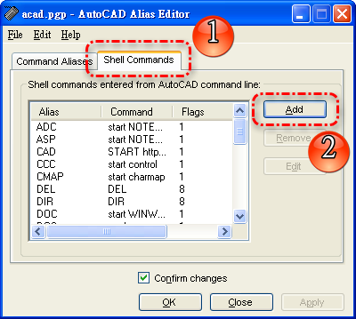
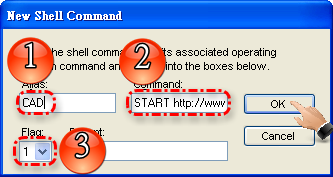
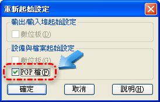
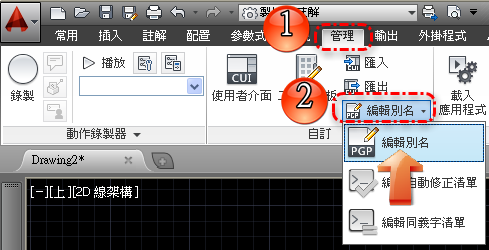
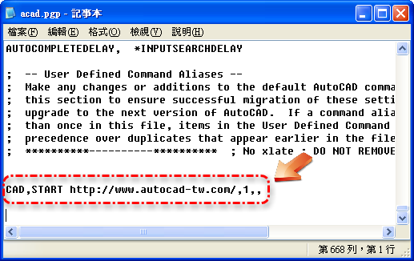

我們一般在工作時所使用到的軟體一定不僅止於AutoCAD，像是會使用到OFFICE或是其他工具程式(美工軟體)，甚至開啟特定的資料夾等等。現在可以透過AutoCAD本身預設的 啟動應用程式 指令，來快速啟動開啟OFFICE軟體或是檔案總管，而且還可以 自訂啟動應用程式。
PS:或許你已知道這個方法，也請分享給你週遭的朋友吧~
※秘訣一※
一般使用 Express工具 ALIASEDIT指令 來新增自訂即可，新增完畢後不需要關閉重新啟動AutoCAD，只要輸入 REINIT指令 重新載入 PGP檔 更新即可。
EEE → start EXPLORER (檔案總管)
NNN → start NOTEPAD (記事本)
PPP → start PBRUSH (小畫家)
DOS → start cmd (命令提示字元)
WWW → start calc (小算盤)
CCC → start control (控制台)
DOC → start WINWORD (Microsoft Office Word)
XLS → start EXCEL (Microsoft Office Excel)
※秘訣二※
也可以使用 acad.pgp 來自訂啟動應用程式，新增完畢後不需要關閉重新啟動AutoCAD，只要輸入 REINIT指令 重新載入 PGP檔 更新即可。
LSP → 系統程式檔
PGP → 系統別名檔
MNS → 功能表檔
AAA → 資料夾
LSP, start NOTEPAD "D:\Menu2008\acad2008.LSP", 1,,
PGP, start NOTEPAD "D:\Menu2008\acad.pgp", 1,,
MNS, start NOTEPAD "D:\Menu2008\AT2008.mns", 1,,
AAA, start explorer "D:\Atsai\@論壇\2D教學\@課程", 1,,
※秘訣三※2013-08-29補充：
●透過「ALIASEDIT指令」自訂開啟網頁，即可在AutoCAD中，輸入CAD指令開啟顧問論壇的網頁。
方式如下：
1.輸入 ALIASEDIT指令 → 開啟「ALIASEDIT」→「Shell Commands」頁籤 →「Add」

2.「Alias」欄位 → 輸入啟用指令「CAD」
「Command」欄位 → 輸入網頁網址「START https://www.autocad-tw.com/」...需在網址前面加上START
「Flag」欄位 → 設定「1」→「OK」→ 儲存關閉「ALIASEDIT」

3.在AutoCAD中，輸入REINIT指令 →「PGP檔」打勾 →「確定」...此步驟只需設定一次即可生效，下次開啟AutoCAD或圖檔不需再設定。

[/url]
●透過「PGP檔設定」自訂開啟網頁，即可在AutoCAD中，輸入CAD指令開啟顧問論壇的網頁。
方式如下：
1.「編輯別名」→ 開啟「PGP檔」

2.在acad.pgp最下方加入語法：「CAD,START https://www.autocad-tw.com/,1,,」→ 儲存關閉「acad.pgp」

3.在AutoCAD中，輸入REINIT指令 →「PGP檔」打勾 →「確定」...此步驟只需設定一次即可生效，下次開啟AutoCAD或圖檔不需再設定。

前篇主題：[討論]可以使用AutoCAD開啟檔案總管或是EXCEL嗎?